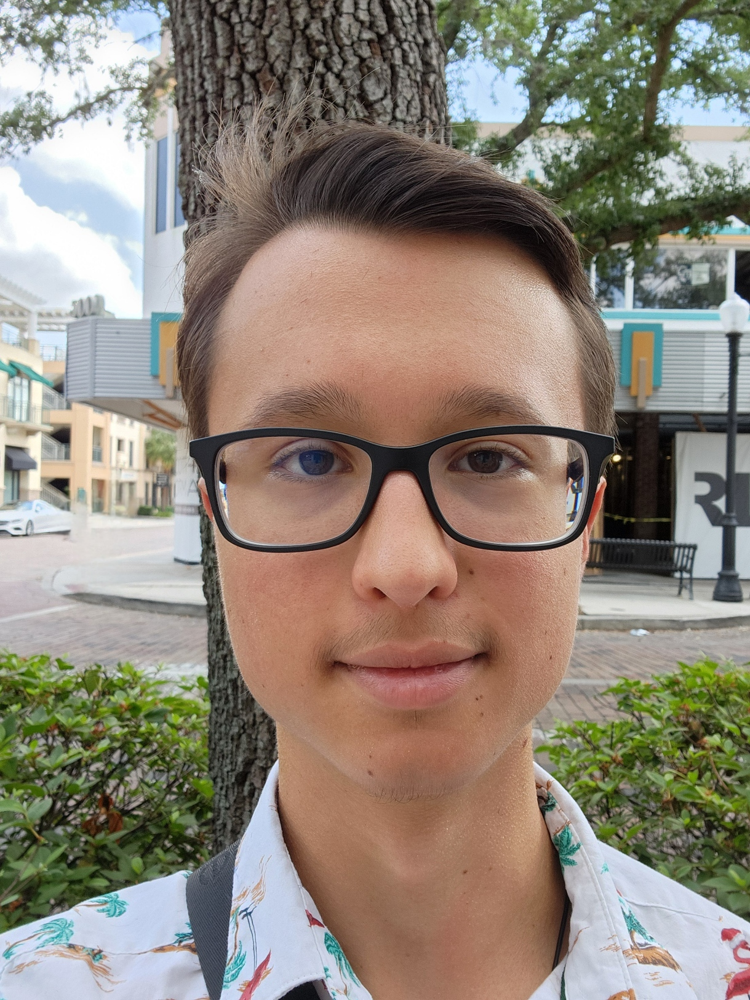

Welcome!

Hello! My name is Andrew Sklyarov — a Computer Science student at the University of Florida (GPA: 3.73, Dean's List Fall 2025) with a passion for full-stack development, AI applications, and cybersecurity. I'm fluent in Python, C++, JavaScript, React.js, React with TypeScript, and more, and I love building tools that are both useful and thoughtfully designed.
About Me
Education
University of Florida — B.S. Computer Science (Aug 2024 – May 2027)
GPA: 3.73 | Dean's List Fall 2025
Relevant coursework: Discrete Math, Data Structures and Algorithms, Intro to Software Engineering
Skills
Languages & Frameworks: Python, Java, JavaScript, TypeScript, HTML/CSS, C++, SQL
Libraries & Tools: React.js, React with TypeScript, Node.js, Git, Firebase, Android Dev, Linux/Unix
Concepts: Data Structures & Algorithms, Agile Development
Spoken Languages: English, Spanish, Russian
Interests: Cybersecurity, AI Development & Applications, Local LLM Deployment
Featured Projects
GoTutor.ai
A supervised tutoring AI currently in development, featuring a React with TypeScript frontend and Node with TypeScript backend.
TownVoice
Frontend Developer
A civic engagement web app built in an Agile team using React. I built UI components for announcements, community boards, and petitions, integrating with ASP.NET backend APIs.
CrimeSphere
A crime data visualization app built in C++ for COP 3530 (Data Structures & Algorithms). Users can choose between a Min Heap or KD Tree algorithm for data processing — I personally implemented the Min Heap.
Data AI Assistant
An AI chatbot that emulates the personality of Lt. Cmdr. Data from Star Trek: The Next Generation. Built with a React frontend and Node.js backend, using custom prompt engineering for character consistency.
NexWeather
An Android weather app with dual-unit (imperial/metric) display, designed to make weather info accessible and shareable for a global audience.
Work & Volunteer History
IT Department Intern — Trib Total Media (May 2026 – Present, Remote)
Beginning a new adventure at Trib Total Media, working on a variety of teams and projects including the DataFusion adtech component.
Tutor — Self Employed Contractor (June 2024 – Present, Remote)
Tutor students in Math and Python. Helped one student improve from an F to a B in Pre-Algebra over 5 months.
Speaking Partner (Volunteer) — ENGIn (June 2021 – June 2022, Remote)
Led weekly English-speaking sessions with a Ukrainian partner, improving their fluency and confidence.
Honors & Awards
- Bright Futures Scholarship
- Golden Seal of Biliteracy
- Dean's List — Fall 2025, University of Florida